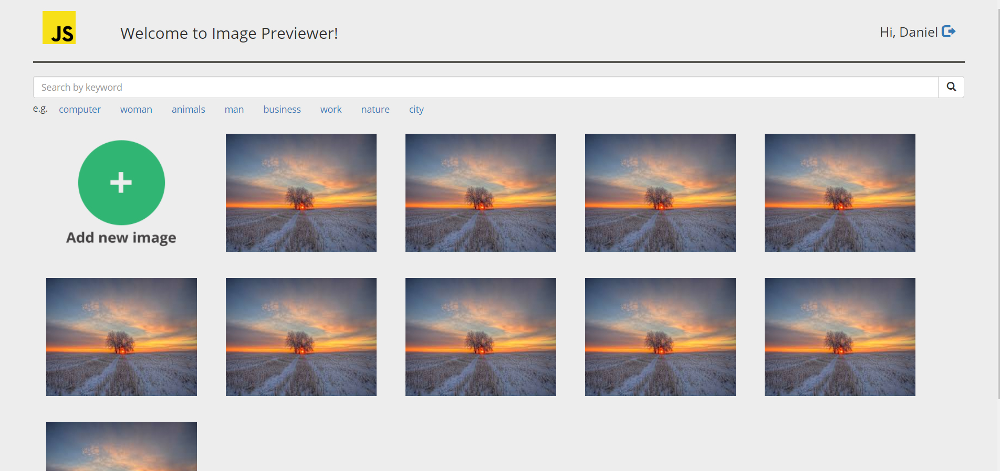

Ivan Delendik
I wanted to be a developer ever since I saw my cousin working in this sphere when I was about 8 years old.
While I was on my third year in college my groupmates got me into front-end. I really enjoyed this sphere and worked on some projects.
Later for my graduation project I worked on back-end using Django which I also really enjoyed. That’s why I feel that I might try full stack one day
I like developing so much I stay up to 4AM sometimes. It was fascinating for me to create something and see the result of my work. Resolving issues and fixing bugs is a part of a process, which I don’t mind, because it means that there is a progress.
I tried learning by myself, but felt like it was hard for me to learn without some kind of relevant program, which got me to apply for Rolling Scopes School.
edu.wh-db.com courses, several projects.
learn.javascript.ru, RSS.
Studied in college, several courseworks.
Studied for graduation project and a freelance project.
Studied as a hobby, 1st place in college competition.
Minsk State Linguistic University, evening courses 2013-2016. Upper-intermediate (certificate).
From quadratic equations task
const solutionArray = [];
//retrieving a, b, c from equation string
const abc = (equation.split('* x'));
let a = parseInt(abc[0]);
const buffer = abc[1].split('^2');
let b = (buffer[1]).split(' ');
b = parseInt(b.join('')); //deleting space between minus sign and a number
let c = (abc[2]).split(' ');
c = parseInt(c.join('')); //deleting space between minus sign and a number
//calculate
let discrSqrt = Math.sqrt(Math.pow(b, 2) - 4 * a * c);
let x1 = ((-b) + discrSqrt) / (2 * a);
let x2 = ((-b) - discrSqrt) / (2 * a);
solutionArray.push(Math.round(x1), Math.round(x2));
return solutionArray.sort((left, right) => left - right);
Test assignment for Intetics:
Website for a driving instructor:
2013 – 2017
Minsk State College of Electronics
Specialty: Informational Technologies Software
2013 – 2016
Minsk State Linguistic University
English courses. Pre-Intermediate to Upper-intermediate (certificate)
2017 – 2021
Belarusian State University of Informatics and Radioelectronics
Part-time. Specialty: Informational Technologies Software.